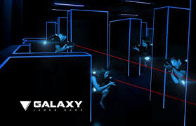

Laser Game je úžasná moderní týmová hra
Neznáte? Čtěte dál!
Pokud chcete zkusit něco nového, nový typ zábavy, u které se královsky pobavíte a
zároveň si zasportujete, Laser Game v Praze je ideální volbou!
Běháte v Aréně, ve které je kromě osvětlených překážek téměř dokonalá tma, kolem
vás
hustá mlha, krčíte se za překážkami a střílíte po ostatních protihráčích, které se
snažíte zasáhnout dříve, než oni zasáhnou vás.
A to vše za doprovodu vámi
vybrané
hudby!
V Aréně jsou osvětlené pouze překážky, mezi kterými se skrýváte. Zásah od
protihráče
vůbec nebolí, protože jsou zásahy snímány za pomocí elektroniky na vestě, kterou
máte
na sobě.
Laser Game je tedy zcela bezpečná hra vhodná pro všechny věkové skupiny – pro děti
od 5
let, studenty, rodiny s dětmi, firemní teambuildingy, oslavy, nebo jako originální
zábava s kamarády.
Laser Game hraje celá Praha!
| Počet hráčů | Dospělí | Studenti, děti | školy |
|---|---|---|---|
| 13-21 | 99 Kč | 89 Kč | 69 Kč |
| 7-12 | 119 Kč | 109899 Kč | |
| 13-21 | 139 Kč | 129 Kč |